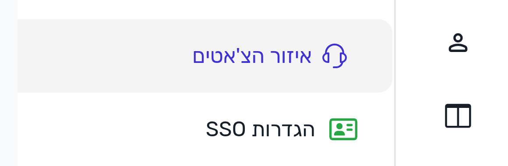
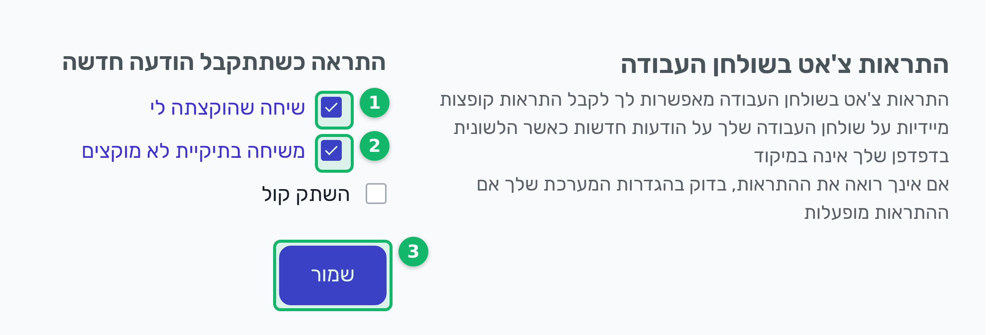

הקישור פותח ישר את אזור ההגדרות של ההתראות, בלי לחפש בתפריט.
אם צריך למצוא ידנית: גלגל השיניים בתפריט הימני, ואז "איזור הצ'אטים".

הקטע נמצא בתחתית רשימת ההגדרות של איזור הצ'אטים, מתחת להגדרה "פרופיל דואר אלקטרוני לצ'אט".
הצ'קים המסומנים בירוק למטה:
